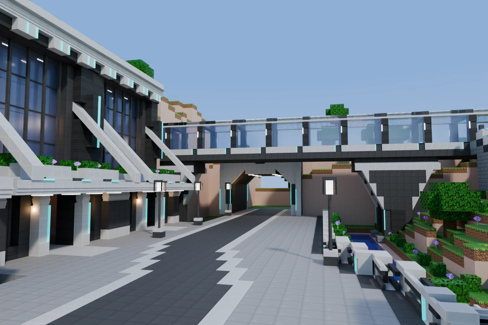
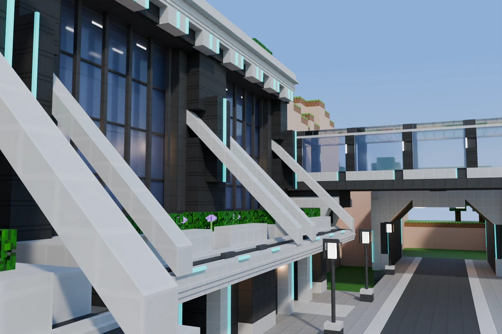

Roads and tunnels
Keep the same 12-block road and pale curb through the portal. Use the established road grades on changing terrain.
Daylit halls and civic spaces occupy streets and terraces. Mesa workrooms open through finished canyon facades, with a separate service route behind them.
City-local coordinates. X increases east and Z south. Local Y0 equals preview Y64. Survey the actual PDIM before setting an origin, cutting a room or placing a bridge footing.
Loading department register…
Choose a plot to see its work level, facade, terrain evidence and route into the gallery.
Frame recessed glazing with pale ribs. Repeat the cornices across adjoining bays, plant the sill and leave white clay visible around the building. Run one paving level from the doorway to the public walk.

The revised native bay uses deep-set glazing, fine mullions, pale diagonal ribs and densely planted ledges. The street render shows three adjoining bays in an illustrative canyon.

Use the taller arcade on terraces with room for its 16-block bay pitch. For lower cuts, use the matching CP16 and CP17 finished room walls. Their glazing, pale ribs and guarded landing are included in the room model.
The road network carries the public route around the city. Glazed crossings link higher walks where the banks align. A separate spine runs below the street and branches into the department work levels.
Keep the same 12-block road and pale curb through the portal. Use the established road grades on changing terrain.
Set the glazed deck above the lower road. Verify both walking landings and the bearing depth down to solid ground.
Run pipes and cables in the separate manual fit-out. Preserve the five-block clear aisle and the stated headroom at the branch.